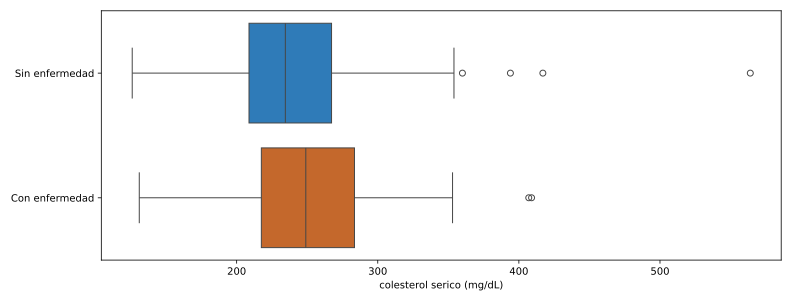
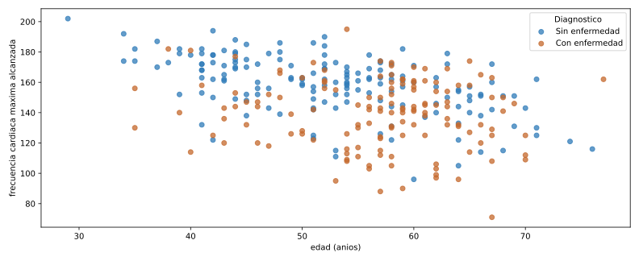

Laboratorio: análisis exploratorio con pandas
| Módulo | Estadística para Analítica |
| Programa | Especialización en Big Data |
| Unidad | Laboratorio complementario. Aplica las herramientas de las semanas 3 a 5 de la Unidad 1 |
1 Para qué sirve este laboratorio
Las Semanas 3 y 4 construyeron cada herramienta por separado, sobre datasets distintos del libro de referencia: state.csv para percentiles y boxplot, dfw_airline.csv para el gráfico de barras, lc_loans.csv para la tabla de contingencia. Aquí encadenas las mismas herramientas sobre un solo dataset real, de principio a fin, como harías con tu propio conjunto de datos.
El dataset es clínico: mediciones de pacientes evaluados por enfermedad cardiovascular. No vas a construir un modelo que prediga el diagnóstico; vas a describir qué diferencias, si las hay, aparecen entre pacientes con y sin enfermedad, usando únicamente las herramientas de la Unidad 1.
2 Objetivo
Al terminar deberías poder:
- Cargar un dataset externo desde una URL pública, verificar su forma y sus tipos antes de usarlo.
- Calcular cuantiles y el rango intercuartílico de una variable numérica, y usarlos para detectar valores atípicos.
- Comparar la distribución de una variable numérica entre dos grupos con un boxplot.
- Resumir una variable categórica con frecuencias y construir una tabla de contingencia con porcentajes por fila.
- Construir un gráfico de dispersión condicionado por una tercera variable e interpretar el patrón.
- Redactar una conclusión exploratoria que distinga asociación de causalidad.
3 El dataset: diagnóstico de enfermedad cardiovascular
Es la base Cleveland del Heart Disease Dataset, recolectada por Robert Detrano en la Cleveland Clinic Foundation y publicada en el UCI Machine Learning Repository: 303 pacientes, 13 variables clínicas y un diagnóstico.
Página oficial: archive.ics.uci.edu/dataset/45/heart+disease. En Kaggle: Heart Disease Cleveland UCI (requiere cuenta).
Cómo cargarlo
Este laboratorio usa la URL directa de UCI: no exige cuenta ni token, así el código corre igual para todos sin depender de credenciales personales.
import pandas as pd
url = "https://archive.ics.uci.edu/static/public/45/data.csv"
df = pd.read_csv(url)Si prefieres trabajar desde el archivo descargado de Kaggle, el procedimiento es el mismo a partir de pd.read_csv("heart.csv"). Los mirrors de Kaggle no siempre coinciden con la codificación original de UCI: algunos recodifican cp de 1-4 a 0-3, y algunos marcan los datos faltantes con el texto "?" en vez de dejarlos vacíos (en ese caso, carga con pd.read_csv("heart.csv", na_values="?")). Antes de reusar el código de este laboratorio con un archivo de Kaggle, revisa df["cp"].unique() para confirmar qué codificación trae tu copia.
Diccionario de variables
| Variable | Tipo | Qué mide |
|---|---|---|
age |
Numérica continua | Edad en años |
sex |
Categórica binaria | Sexo (1 = hombre, 0 = mujer) |
cp |
Categórica, 4 niveles | Dolor de pecho: 1 angina típica, 2 angina atípica, 3 dolor no anginoso, 4 asintomático |
trestbps |
Numérica continua | Presión arterial en reposo (mm Hg) |
chol |
Numérica continua | Colesterol sérico (mg/dL) |
fbs |
Categórica binaria | Glucosa en ayunas mayor a 120 mg/dL |
restecg |
Categórica, 3 niveles | Resultado electrocardiográfico en reposo |
thalach |
Numérica continua | Frecuencia cardíaca máxima alcanzada |
exang |
Categórica binaria | Angina inducida por ejercicio |
oldpeak |
Numérica continua | Depresión del segmento ST inducida por ejercicio |
slope |
Categórica ordinal, 3 niveles | Pendiente del segmento ST en el pico del ejercicio |
ca |
Numérica discreta, 0 a 3 | Vasos principales coloreados por fluoroscopia |
thal |
Categórica, 3 niveles | Resultado de la prueba de talasemia |
num |
Diagnóstico original | 0 sin enfermedad; 1 a 4, distintos grados de enfermedad |
4 Primer vistazo
print(df.shape)
print(df.head())
print(df.dtypes)
print(df.isnull().sum())(303, 14)
age sex cp trestbps chol fbs ... exang oldpeak slope ca thal num
0 63 1 1 145 233 1 ... 0 2.3 3 0.0 6.0 0
1 67 1 4 160 286 0 ... 1 1.5 2 3.0 3.0 2
2 67 1 4 120 229 0 ... 1 2.6 2 2.0 7.0 1
3 37 1 3 130 250 0 ... 0 3.5 3 0.0 3.0 0
4 41 0 2 130 204 0 ... 0 1.4 1 0.0 3.0 0
[5 rows x 14 columns]
age int64
sex int64
cp int64
trestbps int64
chol int64
fbs int64
restecg int64
thalach int64
exang int64
oldpeak float64
slope int64
ca float64
thal float64
num int64
dtype: object
age 0
sex 0
cp 0
trestbps 0
chol 0
fbs 0
restecg 0
thalach 0
exang 0
oldpeak 0
slope 0
ca 4
thal 2
num 0
dtype: int64303 pacientes, 14 columnas, sin sorpresas de forma. ca tiene 4 valores faltantes y thal tiene 2: seis pacientes en total con algún dato incompleto. No se eliminan del dataset completo; simplemente quedan fuera de cualquier cálculo puntual que use esa columna.
El diagnóstico original (num) trae cinco niveles de severidad. Para este laboratorio, igual que en la mayoría de los análisis publicados con este dataset, importa distinguir presencia o ausencia de enfermedad, no el grado:
df["diagnostico"] = (df["num"] > 0).astype(int)
df["diagnostico_txt"] = df["diagnostico"].map({0: "Sin enfermedad", 1: "Con enfermedad"})
df["sexo"] = df["sex"].map({0: "Mujer", 1: "Hombre"})
print(df["diagnostico_txt"].value_counts())
print(df["diagnostico_txt"].value_counts(normalize=True).mul(100).round(1))diagnostico_txt
Sin enfermedad 164
Con enfermedad 139
Name: count, dtype: int64
diagnostico_txt
Sin enfermedad 54.1
Con enfermedad 45.9
Name: proportion, dtype: float64La muestra queda razonablemente balanceada entre los dos grupos: 54.1% sin enfermedad, 45.9% con enfermedad.
5 Variable numérica: colesterol
print(df["chol"].describe())count 303.000000
mean 246.693069
std 51.776918
min 126.000000
25% 211.000000
50% 241.000000
75% 275.000000
max 564.000000
Name: chol, dtype: float64q1 = df["chol"].quantile(0.25)
q3 = df["chol"].quantile(0.75)
iqr = q3 - q1
limite_inferior = q1 - 1.5 * iqr
limite_superior = q3 + 1.5 * iqr
print("Q1:", q1, "Q3:", q3, "IQR:", iqr)
print("limite inferior:", limite_inferior, "limite superior:", limite_superior)
atipicos = df[(df["chol"] < limite_inferior) | (df["chol"] > limite_superior)]
print(atipicos[["age", "sexo", "chol", "diagnostico_txt"]].sort_values("chol", ascending=False))Q1: 211.0 Q3: 275.0 IQR: 64.0
limite inferior: 115.0 limite superior: 371.0
age sexo chol diagnostico_txt
152 67 Mujer 564 Sin enfermedad
48 65 Mujer 417 Sin enfermedad
181 56 Mujer 409 Con enfermedad
121 63 Mujer 407 Con enfermedad
173 62 Mujer 394 Sin enfermedadCinco pacientes quedan por encima del límite superior de 371 mg/dL, y los cinco son mujeres, todas mayores de 55 años. No hay ningún hombre atípico en colesterol en esta muestra. Es un patrón que vale la pena anotar y seguir explorando (por ejemplo, cruzando colesterol con sexo y edad juntos), pero con cinco casos no alcanza para una conclusión general sobre mujeres mayores.
import matplotlib.pyplot as plt
import seaborn as sns
colores = {"Sin enfermedad": "#2f7bb8", "Con enfermedad": "#c4682c"}
fig, ax = plt.subplots(figsize=(11, 4.2))
sns.boxplot(
data=df, x="chol", y="diagnostico_txt", hue="diagnostico_txt",
palette=colores, saturation=1, legend=False, ax=ax,
)
ax.set_xlabel("colesterol sérico (mg/dL)")
ax.set_ylabel("")
plt.show()Un solo llamado a sns.boxplot, con x la variable numérica y y la variable categórica que separa los grupos: seaborn dibuja una caja por cada valor de diagnostico_txt. palette fija el color de cada grupo (los mismos dos colores que vas a ver otra vez en el gráfico de dispersión); saturation=1 evita que seaborn los aclare por defecto.

print(df.groupby("diagnostico_txt")["chol"].median())diagnostico_txt
Con enfermedad 249.0
Sin enfermedad 234.5
Name: chol, dtype: float64La mediana difiere apenas 14.5 mg/dL entre los dos grupos, y las cajas se superponen casi por completo. A diferencia del caso de las aerolíneas de la semana pasada, donde las cajas de Alaska y American no se tocaban, aquí el colesterol por sí solo no separa visualmente a los pacientes con y sin enfermedad. Es un resultado exploratorio legítimo: no toda variable clínicamente relevante produce una diferencia visible en un boxplot.
6 Variable categórica: sexo
print(df["sexo"].value_counts())
print(df["sexo"].value_counts(normalize=True).mul(100).round(1))sexo
Hombre 206
Mujer 97
Name: count, dtype: int64
sexo
Hombre 68.0
Mujer 32.0
Name: proportion, dtype: float64La muestra no está balanceada por sexo: 68% hombres contra 32% mujeres. Conviene tenerlo presente antes de comparar los dos grupos, porque cualquier diferencia en conteos absolutos puede deberse simplemente a que hay más del doble de hombres que de mujeres, no a un efecto real.
7 Tabla de contingencia: sexo y diagnóstico
tabla = pd.crosstab(df["sexo"], df["diagnostico_txt"])
print(tabla)
tabla_pct = (pd.crosstab(df["sexo"], df["diagnostico_txt"], normalize="index") * 100).round(1)
print(tabla_pct)diagnostico_txt Con enfermedad Sin enfermedad
sexo
Hombre 114 92
Mujer 25 72
diagnostico_txt Con enfermedad Sin enfermedad
sexo
Hombre 55.3 44.7
Mujer 25.8 74.2En conteos absolutos hay casi cinco veces más hombres con enfermedad (114) que mujeres con enfermedad (25), pero eso es en parte porque hay más hombres en toda la muestra. El porcentaje por fila corrige eso: 55.3% de los hombres tiene diagnóstico positivo, contra 25.8% de las mujeres. La diferencia se mantiene y es grande incluso después de corregir por el desbalance de la muestra.
8 Dispersión condicional: edad y frecuencia cardíaca máxima
sin_enfermedad = df[df["diagnostico_txt"] == "Sin enfermedad"]
con_enfermedad = df[df["diagnostico_txt"] == "Con enfermedad"]
fig, ax = plt.subplots(figsize=(11, 4.5))
ax.scatter(sin_enfermedad["age"], sin_enfermedad["thalach"], color="#2f7bb8", alpha=0.75, label="Sin enfermedad")
ax.scatter(con_enfermedad["age"], con_enfermedad["thalach"], color="#c4682c", alpha=0.75, label="Con enfermedad")
ax.set_xlabel("edad (años)")
ax.set_ylabel("frecuencia cardíaca máxima alcanzada")
ax.legend(title="Diagnóstico")
plt.show()Separas el DataFrame en dos partes con una condición (sin_enfermedad, con_enfermedad) y dibujas cada una con su propio color, en dos líneas de ax.scatter. Es más código que un solo for, pero se lee de arriba hacia abajo sin tener que seguir un diccionario ni una iteración.

print(df[["age", "thalach"]].corr()) age thalach
age 1.000000 -0.393806
thalach -0.393806 1.000000La correlación es -0.39: una relación negativa moderada, coherente con lo esperado fisiológicamente, a mayor edad, menor frecuencia cardíaca máxima. Al colorear por diagnóstico se ve además que, para una misma edad, los pacientes con enfermedad (naranja) tienden a ubicarse más abajo que los pacientes sin enfermedad (azul). La frecuencia cardíaca máxima separa los dos grupos con más claridad que el colesterol de la sección anterior.
9 Del gráfico al informe
Un informe exploratorio sobre este dataset, para cualquier variable que elijas, necesita cuatro piezas: cuántos pacientes y qué variables hay, un análisis de una variable numérica con su conclusión, un análisis de una variable categórica o una tabla de contingencia con su conclusión, y una relación entre dos variables (dispersión o boxplot agrupado) con su conclusión. Cada conclusión describe una asociación observada en estos 303 pacientes, nunca una causa: “el colesterol no separa los grupos” es una conclusión válida; “el colesterol no causa enfermedad cardiovascular” no se sostiene con un gráfico exploratorio.
Elige trestbps (presión arterial en reposo) y repite el mismo recorrido: cuantiles e IQR, boxplot comparado entre diagnostico_txt, y una frase de conclusión. Después construye la tabla de contingencia entre cp (tipo de dolor de pecho) y diagnostico_txt, con porcentajes por fila, y responde: ¿el tipo de dolor de pecho parece asociado al diagnóstico, o las cuatro categorías se comportan de forma parecida?
10 Errores frecuentes
Error 1
Reusar código de otro dataset sin revisar la codificación
Causa. Los mirrors de Kaggle de este mismo dataset no siempre codifican cp, ca o los valores faltantes igual que la fuente original de UCI.
Solución. Antes de mapear etiquetas o filtrar por un valor concreto, revisa df["columna"].unique(). Si los números no coinciden con el diccionario de variables de esta guía, la fuente usa otra codificación.
Error 2
Leer una diferencia entre grupos como causa del diagnóstico
Causa. Encontrar una diferencia real en los datos (la frecuencia cardíaca máxima, el sexo) se confunde fácilmente con haber encontrado la causa de la enfermedad.
Solución. Un análisis exploratorio muestra asociaciones dentro de esta muestra concreta. Probar causalidad exige diseño experimental o inferencia formal, que es tema de la Unidad 3.
11 Recursos
- Detrano, R. et al. Heart Disease, UCI Machine Learning Repository, 1988. Página del dataset: archive.ics.uci.edu/dataset/45/heart+disease.
- Mirror en Kaggle: Heart Disease Cleveland UCI.
- Documentación de
pandas.DataFrame.quantile: pandas.pydata.org/docs/reference/api/pandas.DataFrame.quantile.html - Documentación de
pandas.crosstab: pandas.pydata.org/docs/reference/api/pandas.crosstab.html
Estadística para Analítica. Institución Universitaria Pascual Bravo. Facultad de Ingeniería. Semestre 2026-02.
Transparencia. La redacción de esta guía contó con el apoyo de inteligencia artificial, usando el modelo Claude Sonnet 5 de Anthropic. Todo el contenido fue revisado y validado. Las salidas de terminal y los gráficos son reales, producidos al ejecutar estos mismos programas contra el dataset público de UCI durante la preparación del material.